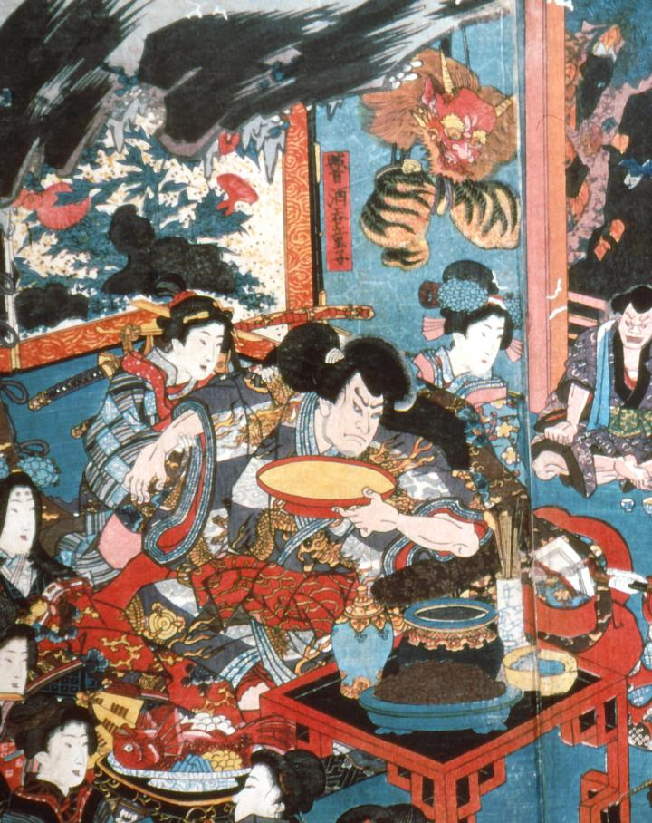

大きな酒盃をもった男の上に釣り下がっている鬼の面。赤鬼で、鋭い角、立派なたてがみが特徴的である。虎皮の衣装も一緒に吊るしてある。
著作者：歌川国貞／出典：親書誌：A5_pushkin_0029：（酒天童子の酒宴；シュテンドウジノシュエン）／日付：2011／資源識別子：A5_pushkin_0029_0002_0000
Copyright (c)2010- International Research Center for Japanese Studies, Kyoto, Japan. All rights reserved.